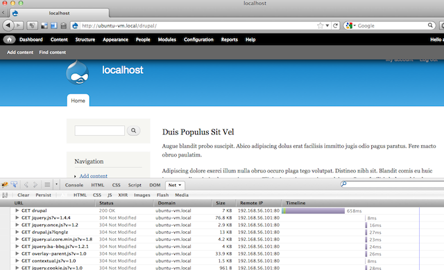

bud@thinkcube.com | twitter @geekaholic
The folk story is that Apache was named after "A-patchy-server", which was the result of NCSA httpd server being patched a lot. The project was started by Brian Behlendorf
Today, Apache is still the most popular web server out there running more than half of the websites on the net. It is actively developed by the Apache Software Foundation along with many other software projects.
Besides its primary function of being a website, Apache can also be configured as a reverse proxy for load balancing.
.notes: We assume your working on Ubuntu. Translate to your favorite distro accordingly.
The easiest method of installing Apache along with PHP and MySQL (aka LAMP) is to use the tasksel command.
tasksel
Alternatively install each package manually:
apt-get install apache2 libapache2-mod-php5 mysql-server
In order to test out Apache performance as we tune it, it is good to setup a real world full fledged CMS such as Drupal.
Autobench is a handy script to stress test a webserver by sending an increasing number of requests. It works by calling the httperf tool iteratively with increasing parameters.
Download autobench and follow directions to compile.
In order to plot graphs, you need to install gnuplot via apt. As of this writing, the script used to plot the graph has a bug calling the current version of gnuplot and requires the following minor modification.
$ sudo vi
which bench2graph
line ~78 should be
echo set style data linespoints >> gnuplot.cmd
Lets benchmark our standard Apache setup to get an idea of default performance.
autobench --single_host --host1 localhost --uri1 /drupal --quiet \
--low_rate 20 --high_rate 200 --rate_step 20 --num_call 10 \
--num_conn 5000 --timeout 5 --file results.tsv
Basically the above will test a single host, localhost/drupal by sending it 20 connections per second, each having 10 requests up to 200 connections per second incrementing by 20. The total number of connections are capped at 5000 while any request that takes more than 5 seconds to respond is considered unsuccessful.
Using the result.tsv file and the included bench2graph utility, you can plot a graph into a postscript file.
bench2graph results.tsv results.ps

You can decrease network overhead and make pages load faster, there by reducing the amount of time a client is connected by compressing pages using gzip. All modern browser support rendering compressed files.
In order to benchmark its effect, you can install a tool such as Firebug on the client side.

Enable the mod_deflate module. On Ubuntu :
a2enmod deflate && a2enmod headers
Then we'll configure deflate to compress everything except images.
sudo vi /etc/apache2/modules-enabled/deflate.conf
!apache
<Location />
# Insert filter
SetOutputFilter DEFLATE
# Don't compress images
SetEnvIfNoCase Request_URI .(?:gif|jpe?g|png)$ no-gzip dont-vary
# Make sure proxies don't deliver the wrong content
Header append Vary User-Agent env=!dont-vary
</Location>
There are a few key parameters that can be tuned:
ps -eafly |grep apache2|awk '{print $8}'|sort -n
Use free to figure out how much memory is available. Cache is also considered free memory but you might want to leave some and not assume all cache will be used.
free
By deviding free memory by the average memory used by an Apache thread, you can estimate the number of MaxClients.
$ ps -eafly |grep apache2|awk '{print $8}'|sort -n
816
3896
3896
3896
3896
20844
$ free
total used free shared buffers cached
Mem: 508904 447344 61560 0 141136 213468
-/+ buffers/cache: 92740 416164
Swap: 407544 4364 403180
Memory avail ~= 60000 (free) + 100000 (cached) ~= 160 MB and Memory per thread ~= 4 MB Then a safe value for MaxClients = 40
We can improve PHP performance by
Fortunately we can get the benefit of both using PHP APC, which is a PHP accellerator!
apt-get install php-apc
You can verify installation by loading a php page having phpinfo(); and searching for apc. Or if you have php5-cli installed:
php -r "phpinfo();" | grep apc
Memcached is a distributed cache for storing key-value pairs in memory for faster access with reduced trips to the database. Some popular PHP apps can use memcache if available. memcached does not instantly accellerate PHP!
apt-get install memcached php5-memcache
service memcached start
DirectoryIndex file list as short as possible..htaccess via AllowOverride noneOptions FollowSymLinks to simplify file access process in Apachemod_rewrite or at least complex regexs